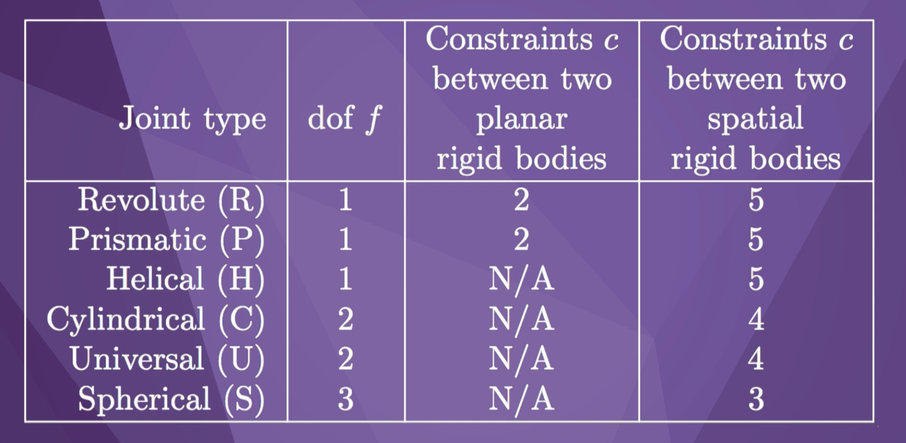

这是美国西北大学 Modern Robotics 课程的个人笔记，主要内容包括机器人运动基础、正向运动学（FK）、逆向运动学（IK）等。
Chapter 2&3: Foundations of Robot Motion
2.1 Degrees of Freedom of a Rigid Body
Configuration: A specification of the position of all points of a robot.
C-space: The space of all configurations.
Degrees of freedom (dof): The dimension of the C-space.
dof=∑(freedoms of points)−# of independent constraints
dof=∑(freedoms of bodies)−# of independent constraints
2.2 Degrees of Freedom of a Robot

Grubler’s formula: (all constraints independent)
dof=rigid body freedomsm(N−1)−joint constraintsi=1∑jci=m(N−1)−i=1∑J(m−fi)=m(N−1−J)+i=1∑Jfi
where
N=# of bodies, including ground
J=# of joints
m=6 for spatial bodies,3 for planar
Example 1: 3R serial “open-chain” robot
N=4,m=3,J=3
dof=3(4−1−3)+3=3
Example 2: Four-bar “closed-chain” mechanism
N=4,m=3,J=4
dof=3(4−1−4)+4=1
Example 3: Stewart platform 6*UPS
N=14,m=6,J=18
dof=6(14−1−18)+36=6
2.3.1 Configuration Space Topology
Two spaces are topological equivalent if one can be smoothly deformed to the other without cutting and gluing.
C-spaces of the same dimension can have different topologies.
2.3.2 Configuration Space Representation
The topology of the space is independent of our presentation of the spce.
Take a sphere as an example:
Explicit Parametrization: minimum number of coordinate, e.g., latitude, longtitude. May have sigularities.
Implicit Parametrization: a surface embedded in a higher-dimensional space, e.g., (x,y,z) such that x2+y2+z2=1.
2.4 Configuration and Velocity Constraints
Holonomic constraints
By Grubler’s formula, this mechanism has one degree of freedom. We view the C-space as a one dimensional space embedded in the four dimensional space of joint angles, defined by three loop closure equations.
then we can rewrite the loop closure equations in the vector form
g(θ)=g1(θ1,…,θn)⋮gk(θ1,…,θn)=0.
Configuration constraints are called holonomic constraints, which are constraints that reduce the dimension of the C-space.
If θ∈Rn, and g(θ)∈Rk, then dof=n−k.
This means that if the robot’s configuration is defined by n varibles, subject to k independent polynomimal constraints, then the dimension of the C-space (dof) is n−k.
Pfaffian & Nonholonomic constraints
When the robot is moving, how the holonomic constraints restrict the velocity of the robot?
Since g(θ) has to be zero at all times, the time rate of change of g must also be zero at all times. So we have
Velocity constraints like this are called Pfaffian constraints.
If the velocity constraints cannot be intergated to given an equivalent configuration constraint, then these are nonholonomic constraints. A nonholonomic constraint reduces the space of possible velocities of the robot, but it does not reduce the space of configurations.
In conclusion, holonomic constraints are constraints on configuartion. Nonholonomic constraints are constraints on velocity. Pfaffian constraints can be holonomic configuration constraints or only nonholonomic velocity constraints.
2.5 Task Space and Workspace
Task space: The space in which the robot’s task is naturally expressed.
Workspace: A specification of the reachable configurations of the end-effector.
3.2.1 Rotation Matrices
Consider the following space frame s and body frame b.
We can express the orientation of the frame b relative to s by writing the unit coordinate axes of frame b in the coordinates of frame s
x^b=010y^b=−100z^b=001
Then write the column vectors side by side to obtain the rotation matrixRsb.
Rsb=[x^by^bz^b]=010−100001
The rotation matrix must be subject to
RTR=I,I=100010001,
which ensures the determinant of R is 1 since we only use right handed frames.
The set of all rotation matrices is called the special orthogonal group. The special orthogonal group SO(3) is the set of all 3×3 real matrices R satisifying:
RTR=I and
detR=1.
Some properties of rotation matrices:
inverse: R−1=RT∈SO(3)
closure: R1R2∈SO(3)
associative: (R1R2)R3=R1(R2R3)
not commutative: R1R2=R2R1
x∈R3,∥Rx∥=∥x∥
Common uses of rotation matrices:
Represent an orientation:
Rcs=RscT=Rsc−1
Change reference frame:
Rsc=RsbRbc
ps=Rsbpb
Rotate a vector or frame:
Rsb=R=Rot(z^,90∘)
ps′=Rps
Rsc′=RRsc(rotation about z^s)
Rsc′′=RscR(rotation about z^c)
3.2.2 Angular Velocities
Any angular velocity can be represented by a rotation axis and the speed of rotation about it.
Rotation axis: ω^s
Rate of rotation: θ˙
The angular velocity vector in the s frame is obtained by
ωs=ω^sθ˙
The linear velocity of the x-axis is calculated as
Since [x]=−[x]T, [x] is called a skew-symmetric matrix. The set of all 3×3 skew-symmetric real matrices is called so(3).
With the bracket notation, we have
R˙sb=[x^˙by^˙bz^˙b]=[ωs]Rsb
The angular velocity vector can also be expressed in the body frame b.
ωb=Rbsωs=Rsb−1ωs=RsbTωs
Or put simply,
ωb=R−1ωs=RTωs,ωs=Rωb,
[ωb]=R−1R˙=RTR˙,[ωs]=R˙R−1=R˙RT
3.2.3 Exponential Coordinates of Rotation
Besides the rotation matrix, oritentation has an alternative representation, the 3-parameter representation.
Any orientation can be achieved from an initial orientation aligned with the space frame by rotating about some unit axis ω^ by a particular angle θ. The 3-vector ω^θ is called the exponential coordinates, representing the orientation of one frame relative to another.
Consider only one coordinate axis p. We want to determine the final location of the vector p(θ) if it rotates an angle θ about the rotation axis ω^.
p˙(t)=ω^×p(t)=[ω^]p(t)
x∈R:x˙(t)=ax(t)→x(t)=eatx(0)
eat=1+at+2!(at)2+3!(at)3+⋯
Generalize to vector linear differential equation:
x∈Rn:x˙(t)=Ax(t)→x(t)=eAtx(0)
eAt=1+At+2!(At)2+3!(At)3+⋯
p(t)=e[ω^]θp(0)=e[ω^θ]p(0)
Since [ω^θ]∈so(3), the series expansion has a simple closed form:
Rot(ω^,θ)=e[ω^]θ=I+sinθ[ω^]+(1−cosθ)[ω^]2∈SO(3)
The matrix exponentiation integrates the angular velocity ω^ for time θ seconds, going from the identity matrix to the final rotation matrix R.
exp:[ω^]θ∈so(3)→R∈SO(3)
Inversely, the matrix logarithm takes a rotation matrix and returns the skew-symmetric matrix representation of the exponential coordinates that achieve it, starting from the identity orientation.
log:R∈SO(3)→[ω^]θ∈so(3)
For a revolute joint, the unit angular velocity ω^ represents the axis of rotation of the joint, and θ represents how far that joint has been rotated.
3.3.1 Homogeneous Transformation Matrices
The configuration of a body frame b in the fixed space frame s can be represented by specifying the position p of the frame b and the rotation matrix R specifying the orientation of b, both in the s coordinates.
We gather p and R to get a 4×4 matrix T, called a homogeneous transformation matrix, or transformation matrix.
The set of all transformation matrices is called the special Euclidean groupSE(3). The special Euclidean group SE(3) is the set of all 4×4 real matrices T of the form
Any rigid-body velocity consists of a linear component and an angular component, and is equivalent to the instantaneous velocity about some screw axis.
The screw axis is defined by a point q on the axis, a unit vector s^ in the direction of the axis, and the pitch of the screw h.
h=pitch=angular speedlinear speed
The screw axis defines the direction the body is moving, and θ˙ is a scalar indicating how fast the body rotates about the screw.
We choose a reference frame, and define the screw axis S as a 6-vector in that frame’s coordinates.
S=[SwSv]=[angular velocity when θ˙=1linear velocity of the origin when θ˙=1]
The linear velocity of the origin is a combination of two terms: the linear velocity due to translation along the screw axis, and the linear velocity due to rotation about the screw axis.
linear velocity of the origin=(hs^−s^×q)θ˙
The twist, which is a full representation of angular and linear velocity, is obtained by multiplying the representation of the screw axis S by the scalar rate of rotation θ˙.
V=[wv]=Sθ˙
If pitch h is infinite:
Sw=0,∥Sv∥=1,θ˙=linear speed
If pitch h is finite:
∥Sw∥=1,θ˙=rotational speed
If S is defined in {b}, Vb=(wb,vb)=Sθ˙ is the body twist. If S is defined in {s}, Vs=(ws,vs)=Sθ˙ is the spatial twist.
In conclusion, a twist is a 6-vector consisting of a 3-vector expressing the angular velocity and a 3-vector expressing the linear velocity. Both of these are written in coordinates of the same frame, and the linear velocity refers to the linear velocity of a point at the origin of that frame.
To change the frame of representation of a twist, we use a 6×6adjoint representation of a transformation matrix.
T=[R0p1]⇒[AdT]=[R[p]R0R]∈R6×6
Va=[AdTab]Vb
Recall that
[ωb]=R−1R˙∈so(3)
[ωs]=R˙R−1∈so(3)
Similarly, we have
[Vb]=T−1T˙=[[ωb]0vb0]∈se(3)
[Vs]=T˙T−1=[[ωs]0vs0]∈se(3)
where se(3) is the space of 4×4 matrix representations of twists. The set of all 4×4 real matrices with a 3×3so(3) matrix at the top left and four zeros in the bottom row is called se(3).
3.3.3 Exponential Coordinates of Rigid-Body Motion
The matrix exponential for rigid-body motions also has closed-form solutions.
If the screw axis is a pure translation with no rotation, Sw=0,∥Sv∥=1, and θ refers to the linear distance traveled. The solution is:
e[S]θ=[I0Svθ1]
If the screw axis has rotation, ∥Sw∥=1. The solution is:
Each single-degree-of-freedom joint of a robot, such as a revolute joint, a prismatic joint, or a helical joint, has a joint axis defined by a screw axis.
3.4 Wrenches
A line of force fb acts at the point rb, both represented in the {b} frame. This force induces a 3-vector torque, or moment, about the frame {b}.
mb=rb×fb
We can package the moment and the force together in a single 6-vector called the wrench.
Fb=[mbfb]
The dot product of a twist and a wrench is power, which must be the same whether the wrench and twist are represented in the {b} frame or in the {s} frame.
We have changed the coordinate frame of the wrench from the {b} frame to the {s} frame.
An example:
Fa=[mafa]=0000−mg0
Taf=100001000010−L001
Ff=[mfff]=[AdTaf]TFa=00−mgL0−mg0
Chapter 4: Forward Kinematics
The forward kinematics problem is to find the configuration of the {b} frame relative to the {s} frame given the vector of joint angles θ. Or put simply: Given θ, find T(θ).
4.1.1 Product of Exponentials Formula in the Space Frame
This robot has three joints: a revolute joint, a prismatic joint, and another revolute joint. The 3-vector θ is a list of the three joint variables.
If we set all of the joint variables equal to zero, the robot is in its home position.
θ=θ1θ2θ3=000
T(θ)=M=1000010000103001
Now we rotate joint 3 by π/4 radians.
θ=θ1θ2θ3=00π/4
Since it is a revolute joint with no translational motion, the screw axis has zero pitch. We represent the axis in the {s} frame.
Let M be the transformation matrix of the end-effector frame {b} when θ=0.
Find the {s}-frame screw axes S1,…,Sn for each of the n joint axes when θ=0.
Given θ, evaluate the product of exponentials (PoE) formula in the space frame:
T(θ)=e[S1]θ1e[S2]θ2…e[Sn]θnM
4.1.2 Product of Exponentials Formula in the End-Effector Frame
We use the same example in 4.1.1.
Zero configuration
T(θ)=M=1000010000103001
Rotate joint 1 by an angle θ1
We represent the screw axis in the {b}-frame as B1.
B1=[ω1v1]=001030
T(θ)=Me[B1]θ1
Extend joint 2 by θ2 units of distance
B2=[ω2v2]=000100
T(θ)=Me[B1]θ1e[B2]θ2
Rotate joint 3 by θ3
B3=[ω3v3]=001010
T(θ)=Me[B1]θ1e[B2]θ2e[B3]θ3
Forward kinetics:
Let M be the transformation matrix of the end-effector frame {b} when θ=0.
Find the {b}-frame screw axes B1,…,Bn for each of the n joint axes when θ=0.
Given θ, evaluate the product of exponentials (PoE) formula in the end-effector frame:
T(θ)=Me[B1]θ1e[B2]θ2…e[Bn]θn
Forward Kinematics Example
To solve the forward kinematics, we need to find M, the configuration of the {b}-frame, and the joint screw axes when the arm is at its zero configuration. Then we can use the product of exponentials formulas.
M=0−100−100000−10190−31
joint 1:
S1=001000B1=00−1−1900
joint 2:
S2=0010−100B2=00−1−900
joint 3:
S2=0010−190B2=00−1000
joint 4:
S2=000001B2=00000−1
Chapter 6: Inverse Kinematics of Open Chains
FK: Given θ, find T(θ)∈SE(3).
IK: Given X∈SE(3), find θ such that T(θ)=X.
May be zero, one, or multiple solutions θ.
Solution methods of IK:
analytic closed-form
iterative numerical methods
6.2 Numerical Inverse Kinematics
For simplicity, we will start with a coordinate-based forward kinematics, rather than a transformation matrix-based.
FK: coord FK: coord IK: θ→T(θ)∈SE(3)θ→f(θ)∈Rmfind θd such thatxd−f(θd)=0
where f(θ) is a minimal set of coordinates describing the end-effector configuration.
Write the Taylor expansion of the function f(θ) around θd.
If J is not invertible, because it is not square or because the robot is at a singularity, we premultiply (1) by the pseudoinverse of J.
J†(θi)(xd−f(θi))=Δθ∗
If there exists a Δθ exactly satisfying (1), then Δθ∗ has the smallest 2-norm among all solutions.
If there is no Δθ exactly satisfying (1), then Δθ∗ comes closest in the 2-norm sense.
Newton-Raphson numerical inverse kinematics:
(a) Initialization: Given xd∈Rm and an initial guess θ0∈Rn, set i=0.
(b) Set e=xd−f(θi). While ∥e∥>ϵ for some small ϵ:
Set θi+1=θi+J†(θi)e.
Increment i.
This is the Newton-Raphson numerical algorithm for inverse kinematics when the end-effector configuration is represented by a minimum set of coordinates xd. Now, we will modify the algorithm so that the desired end-effector configuration is described by the transformation matrix Tsd.
Tbd(θi)=Tsb−1(θi)Tsd=Tbs(θi)Tsd
[Vb]=logTbd(θi)
Newton-Raphson numerical inverse kinematics:
(a) Initialization: Given Tsd∈Rm and an initial guess θ0∈Rn, set i=0.
(b) Set [Vb]=log(Tsb−1(θi)Tsd). While ∥ωb∥>ϵω or ∥vb∥>ϵv for some small ϵω, ϵv:
Set θi+1=θi+Jb†(θi)Vb.
Increment i.
Chapter 11: Control System
11.1 Control System Overview
Control objetives:
Motion control
Force control
Hybrid motion-force control
Impedance control
A simplified diagram of the control system:
11.2.1 Error Response
desired motion: θd(t)
actual motion: θ(t)
error: θe(t)=θd(t)−θ(t)
The error dynamics are the equations that describe the evolution of θe of the control system. A good controller would control error dynamics that drive any intial error to zero, or nearly zero, as quickly as possible.
Unit step error response: the evolution of the error when
θe(0)=1
θ˙e(0)=θ¨e(0)=⋯=0
steady-state error response: ess
transient error response: overshoot, settling time
To understand the character of error response, we will study the eigenvalues of A. These eigenvalues will determine the initial error θe(0) grows or shrinks with time.
If Re(s)<0 for all eigenvalues s of A, then the error dynamics are stable., i.e., the error decays to zero.
The eigenvalues s are the roots of the characteristic equation:
det(sI−A)=sp+ap−1sp−1+⋯+a2′s2+a1′s+a0′=0
A necessary condition for stability is that all ai′ are positive. This condition is also sufficient for stability for first- and second-order error differential equations, but not for third-order or higher.
11.2.2.1 First-Order Error Dynamics
θ˙e(t)+bkθe(t)=0
Set m=0 gives us this first-order differential equation, which means the force due to the spring and the force due to the damper always sum to zero.
Define time constantt=b/k, and we have
θ˙e(t)+t1θe(t)=0
This is the standard first-order form of error dynamics.
The error differential equation is stable if the time constant t is positive. The solution to the equation is
θe(t)=e−t/tθe(0)
The figure shows the unit step error reponse, which is a exponential decaying of time.
11.2.2.2 Second-Order Error Dynamics
Follow the mass-spring-damper analogy for the error dynamics of a controlled single joint robot.
θ¨e(t)+mbθ˙e(t)+mkθe(t)=0
Assuming m,b,k>0, the error dynamics are stable and the error will decay to zero.
Define the natural frequency
ωn=k/m
and the damping ratio
ζ=b/(2km)
Then we can rewrite the differential equation as
θ¨e(t)+2ζωnθ˙e(t)+ωn2θe(t)=0
This is the standard second-order form of error dynamics.
The characteristic equation of this differential equation is
s2++2ζωns+ωn2=0
The roots of the quadratic equation is
s1,2=−ζωn±ωnζ2−1
If ζ≥1, then s1 and s2 are real numbers.
If ζ<1, then the roots are complex conjugates.
ζ>1: Overdamped
θe(t)=c1es1t+c2es2t
where
s1=−ζωn+ωnζ2−1s2=−ζωn−ωnζ2−1
ζ=1: Critically damped
θe(t)=(c1+c2t)e−ωnt
and
s1,2=−ωn
ζ<1: Underdamped
θe(t)=(c1cosωdt+c2sinωdt)e−ζωnt
The frequency of the sinusoid is damped natural frequency.
ωd=ωn1−ζ2
s1,2=−ζωn±jωd
11.3 Motion Control with Velocity Inputs
When we model a robot, we usually assume that we have control of the forces and torques at the joints, and the resulting motion of the robot is determined by its dynamics.
But it’s simpler to ignore the dynamics and assume that we have control of the joint velocities.
P control
Open-loop control:
θ˙(t)=θ˙d(t)
Closed-loop control:
θ˙(t)=Kp(θd(t)−θ(t))=Kpθe(t)
where Kp>0 is the proportional gain. This type of control is called Proportional (P) control.
Setpoint control
θ˙d(t)=0
⇒θ˙e(t)=θ˙d(t)−θ˙(t)=−θ˙(t)
⇒θ˙e(t)=−Kpθe(t)
⇒θ˙e(t)+Kpθe(t)=0
⇒θe(t)=e−t/tθe(0) where t=1/Kp
The larger Kp, the faster the error converges to zero.
Constant desired velocity
θ˙d(t)=c
⇒θ˙e(t)=θ˙d(t)−θ˙(t)=c−Kpθe(t)
⇒θ˙e(t)+Kpθe(t)=c
⇒θe(t)=Kpc+(θe(0)−Kpc)e−Kpt
P controller needs error to command a non-zero velocity.
PI control
θ˙(t)=Kpθe(t)+Ki∫0tθe(t)dt
This controller is called Proportional-Integral (PI) control.
θ˙e(t)+Kpθe(t)+Ki∫0tθe(t)dt=c
⇒θ¨e(t)+Kpθ˙e(t)+Kiθe(t)=0
Now it is a standard second-order homogeneous differential equation, where
ζ=Kp/(2Ki)ωn=Ki
P control eliminates steady state error for setpoint control, and PI control eliminates steady state error for any trajectory with constant velocity.
θ˙(t)=θ˙d(t)+Kpθe(t)+Ki∫0tθe(t)dt
Task-space control with velocity inputs
Now we move to the task-space version of the PI controller.
The desired motion is Xd∈SE(3), [Vd]=Xd−1X˙d, and the actual motion is X∈SE(3), [Vb]=X−1X˙.
Vb(t)=[AdXbd]Vd(t)+KpXe(t)+Ki∫0tXe(t)dt
where
Xbd=XbsXsd=X−1Xd[Xe]=logXbd=log(X−1Xd)
and
θ˙=Jb†(θ)Vb
Decoupled task-space control with velocity inputs
We can also decouple the rotation error and the linear error.